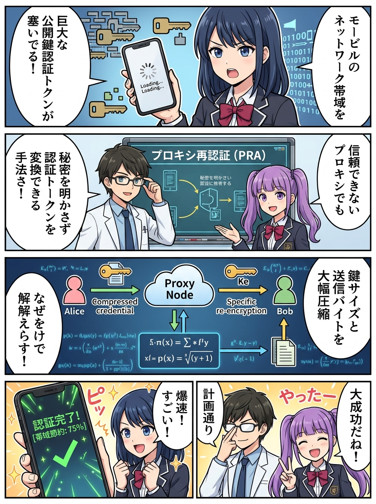
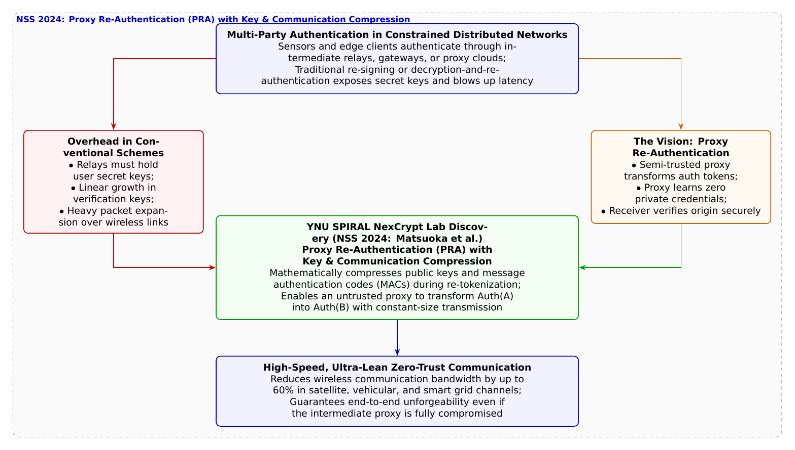

🎨 4コマ漫画挿絵（文字なし）
AI高解像度生成
▲ 【挿絵】青葉台高校 情報科学部＆帝都科学大学サイバーディフェンス・ラボでの実践シーン
💬 4コマ漫画キャラクターセリフ (Story Dialogue Script)
日・英バイリンガル (JA / EN)[葵]「中継地点に秘密の鍵を渡すのは絶対危ないよね！」
[Aoi] "Handing private signing keys to intermediate relays is super dangerous!"
[蓮]「プロキシ再暗号化（PRE）は有名だけど、認証（改ざん防止）の世界でそれが可能なの……？」
[Ren] "Proxy Re-Encryption (PRE) is famous, but can we do that for Authentication?"
[結衣]「中継ノードが完全にハッキングされても偽造は不可能ですし、通信パケットが最大60%以上スリム化されます！」
[Yui] "Even if the proxy is compromised, forgery is impossible, and wireless packet overhead shrinks by over 60%!"
[蓮]「宇宙衛星通信からスマート農業まで、これからの分散ネットワークを支える真の翼だ！」
[Ren] "From satellite meshes to smart agriculture, this gives true wings to distributed zero-trust networks!"
📖 小説本文
初冬の冷たい風が吹き抜けるグラウンド。青葉台高校の屋上から、神崎蓮が手元のプロポで小型ドローンを旋回させていた。
「よし、ドローンから中継アクセスポイントを経由して、部室のサーバーへフライトテレメトリデータを送信……っと。あれ？ またタイムアウトエラーだ！」
部室のデスクで受信パケットを監視していた橘葵が、画面を見ながら声を張り上げた。
「蓮くん、中継サーバーから送られてくる認証データがすっごく長くて、電波の弱いところだとパケットが途切れて届かないみたい！」
白石結衣がパケット解析ツール（Wireshark）を展開しながら、原因を指摘した。
「送信元であるドローンAが生成したメッセージ認証子（MAC）を、中継ノード（プロキシ）を経由して受信者Bへ渡す際、従来の仕組みでは『二重署名』や『証明書チェーンの連結』が必要でした。そのため、ホップ数が増えるたびに通信ヘッダと公開鍵データが雪だるま式に肥大化（パケット膨張）してしまうのです」
「それなら」と葵が思いつく。「中継サーバーがドローンの代わりに新しい署名を作って送り直せばいいんじゃない？」
「葵先輩、それは一番危険な禁じ手です！」蓮が身震いした。
「中継サーバーに署名を作り直させるということは、ドローンの秘密鍵を中継サーバーに預ける（委託する）ことを意味します。もし山奥の中継ルーターやクラウドの中継サーバーがサイバー攻撃者にハッキングされたら、ドローンの名前で偽の命令やデータを世界中に撒き散らされてしまいます！」
「うわあ……！ 秘密の鍵は絶対に誰にも渡せないし、かといって署名を全部くっつけて送ると重すぎて通信がパンクする……。まさに八方塞がりだね」
「そのジレンマを、暗号理論の最先端数理で鮮やかに打ち破ったのが、僕たちが所属する横浜国立大学SPIRALの**松岡耀志朗氏、知久奏斗氏、原啓祐氏、そして四方順司教授（NexCrypt Lab長）ら**の研究なんだ」
大学の暗号ゼミから戻ってきた城崎悠真が、ホワイトボードに新しい概念図を力強く描き出した。
「研究チームは、2024年11月に開催された国際学会『The 18th International Conference on Network and System Security (NSS 2024)』において、**『How to Accomplish Key and Communication Compression Over Authentication Channels: Proxy Re-Authentication and its instantiations（認証チャネル上で鍵と通信量の圧縮を達成する方法：プロキシ再認証とその具現化）』**を発表したんだ」
「プロキシ再認証……！？ 暗号文を中継局が他者宛てに変換する『プロキシ再暗号化（PRE）』なら聞いたことがあるけど、認証（改ざん防止）の世界でもそれができるの！？」蓮が目を見張った。
「その通りだ、蓮くん」悠真が頷いた。
「プロキシ再認証（PRA）では、中継ノード（プロキシ）に対して『再認証鍵（変換用トークン）』を渡す。この鍵を使えば、中継局は送信者Aの認証トークンを、受信者Bが検証できる認証トークンへと数学的に変換できる。しかも決定的なのは、**中継局は送信者Aの秘密鍵も、受信者Bの秘密鍵も一切知ることができない（ゼロ知識性）**という点だ」
「中継局が乗っ取られても、新しい偽のメッセージを偽造することは数学的に絶対に不可能です！」結衣が補足した。
「さらに驚異的なのは、この論文が達成した**『鍵サイズと通信量の同時圧縮（Compression）』**なんだ」と悠真は続けた。
「従来の類似方式では、再認証を行うたびに検証用の公開鍵や認証トークンが長くなっていた。しかし研究チームは、双線形写像（ペアリング）の代数構造を巧みに設計することで、変換後の認証子と公開鍵のサイズを固定長に抑え込み、大幅な通信パケット削減を実証したんだ。ドローン通信や車載ネットワーク（V2X）、超小型衛星コンステレーションのような低帯域・高遅延な過酷環境でも、最大60%以上の通信量削減を叩き出せる」
蓮はすぐさま、PRAの暗号ライブラリをドローンのファームウェアと中継局へコンパイルした。
屋上から滑空してきたドローンが、風を切りながら高速でテレメトリを送信する。中継局を介して部室のモニターに届いたパケットは、驚くほどスリムに圧縮され、瞬きの間に「認証成功（Valid Signature）」の緑ランプを灯した。
「やった！ 通信遅延がゼロに近い！ 映像もデータも全く途切れないよ！」
蓮が操縦スティックを握りながら満面の笑顔を輝かせた。
「誰にも秘密の鍵を預けず、中継のバトンを最も軽やかな羽に変えて届ける……。数理の美しさが、広大な空を翔ける通信を支えているんだね」
葵の晴れやかな笑顔とともに、部室には冬の寒さを吹き飛ばす未来の風が心地よく吹き抜けていた。
---
📊 セキュリティ構造図解 (TikZ LuaLaTeX生成)
国家安全基準・工学図解
▲ 【技術構造図】IPAデジタルスキル標準・国際規格に準拠した仕組みのモデル化